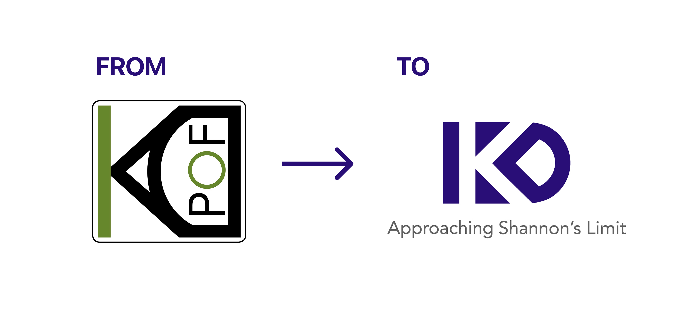
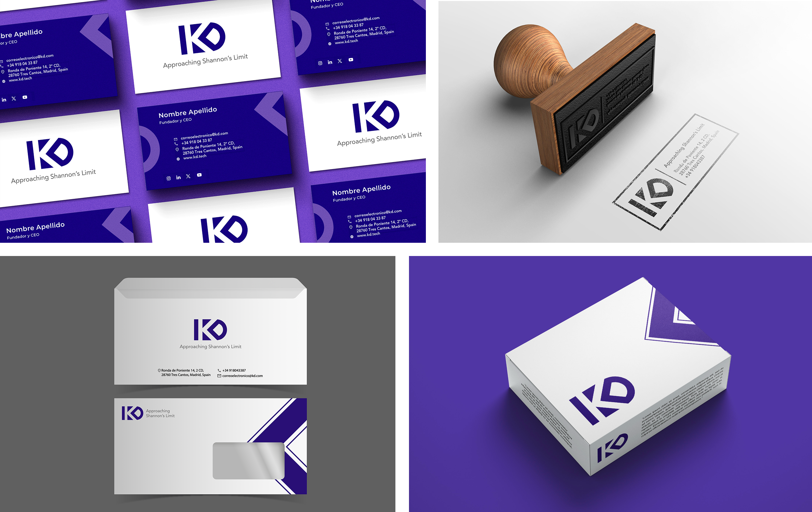

01 — Workshop
The Workshop
KDPOF, a leading company in high-speed optical communication solutions for harsh environments, decided to take a strategic leap — to expand beyond its original acronym and evolve into a broader technology brand known simply as KD. This wasn't just a name change; it required a complete strategic repositioning.
A tailor-made brand strategy workshop brought together KDPOF's leadership team to align on vision, values, and target positioning before a single design decision was made.

- Brand vision and mission alignment workshop
- Competitive landscape and positioning mapping
- Target audience and key message definition
- Strategic brand direction consensus across leadership
02 — Brand
Reimagining the Brand
The new KD brand had to honour the company's deep technical heritage — 15+ years of innovation in optical communications — while opening the door to a wider technology market. The identity needed to feel both authoritative and forward-looking, grounded in engineering excellence but ready for a global stage.

- Refined name and monogram — KD — clean, ownable, scalable
- Strategic brand personality bridging legacy and innovation
- New typography and design elements reflecting precision and technology
